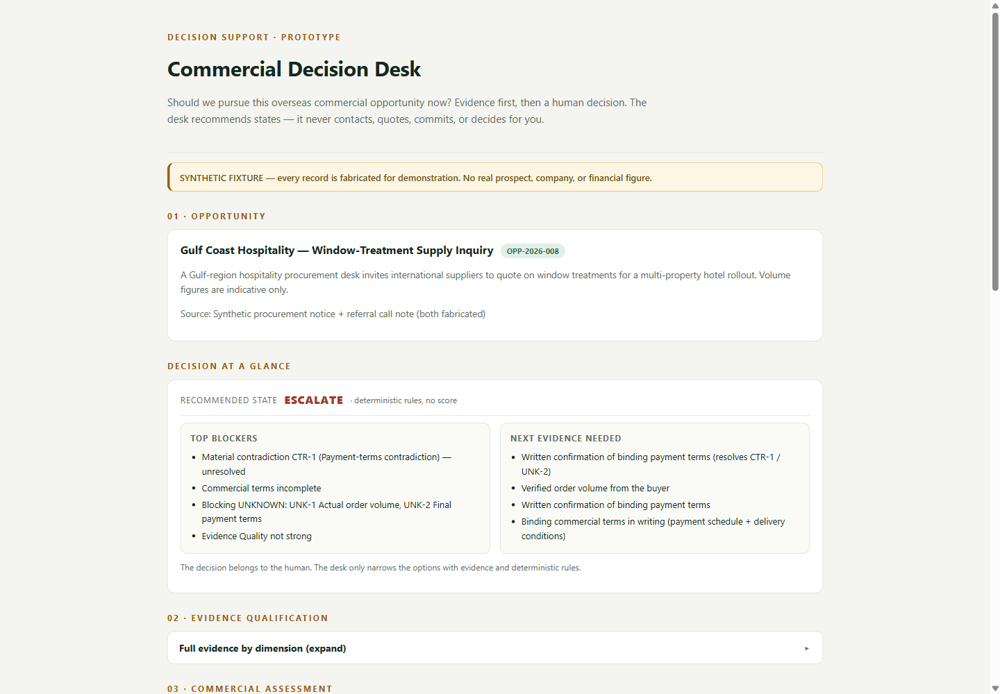

Paul's Tradecraft
Evidence-first decision orchestration
Commercial Decision Desk
DISCOVER
→
QUALIFY
→
ASSESS
→
EXPOSURE
→
DECIDE
HUMAN DECISION REQUIRED

One auditable commercial state — evidence, exposure, contradictions, UNKNOWNs. The human decides.
SYNTHETIC decision-design proof · human decision required · no autonomous action · commercial adoption / ROI not proven